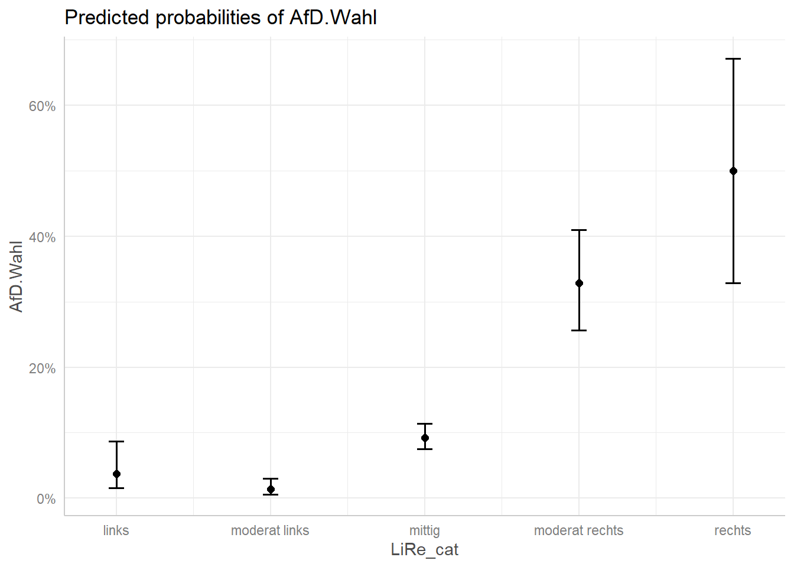
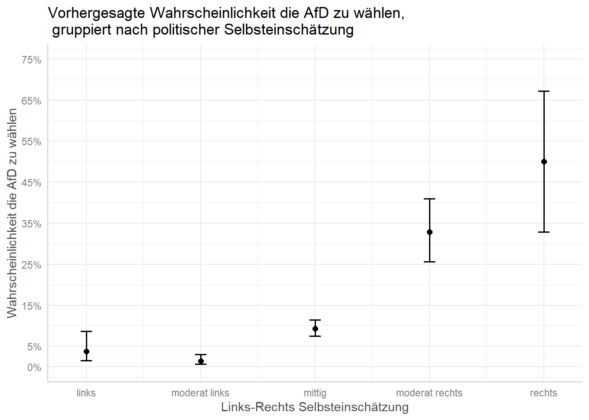

Lineare Regressionen eignen sich nur für metrische abhängige Variablen, nicht aber für dichotome abhängige Variablen, da diese unter anderem die Anwendungsvoraussetzungen der linearen Regression verletzen. Ein nicht-lineares Regressionsmodell liegt mit der binominalen logistischen Regression vor, für die geringere Anwendungsvoraussetzungen als bei der linearen Regression gelten. Dabei ist die abhängige Variable aber nicht y, sondern die Wahrscheinlichkeit, dass y den Wert 1 annimmt. Da die Regressionskoeffizienten von logistischen Regressionsmodellen schwerer zu interpretieren sind, wird in dieser Sitzung neben der Berechnung der binominalen logistischen Regression in R gezeigt, wie die Ergebnisse anschaulich interpretiert werden können.
getwd()
setwd("eigener Pfad")library(foreign)
gles <- read.spss(file = "ZA6801_de_v4-0-1.sav", to.data.frame = TRUE)
lijphart <- read.csv2("Lijphart_Data_recode.csv")# GLES
# Alter
q2c_num <- as.numeric(as.character(gles$q2c))
gles$alter <- 2017 - q2c_num
# Geschlecht
names(gles)[names(gles) == "q1"] <- "geschlecht"
# Einkommen kategorial
gles$einkommen_cat[gles$q192 == "unter 500 Euro" |
gles$q192 == "500 bis unter 750 Euro" |
gles$q192 == "750 bis unter 1000 Euro"] <- "weniger als 1000"
gles$einkommen_cat[gles$q192 == "1000 bis unter 1250 Euro" |
gles$q192 == "1250 bis unter 1500 Euro" |
gles$q192 == "1500 bis unter 2000 Euro"] <- "1000 bis 1999"
gles$einkommen_cat[gles$q192 == "2000 bis unter 2500 Euro" |
gles$q192 == "2500 bis unter 3000 Euro"] <- "2000 bis 2999"
gles$einkommen_cat[gles$q192 == "3000 bis unter 4000 Euro"] <- "3000 bis 3999"
gles$einkommen_cat[gles$q192 == "4000 bis unter 5000 Euro"] <- "4000 bis 4999"
gles$einkommen_cat[gles$q192 == "5000 bis unter 7500 Euro"] <- "5000 bis 7499"
gles$einkommen_cat[gles$q192 == "7500 bis unter 10000 Euro" |
gles$q192 == "10000 Euro und mehr"] <- "7500 und mehr"
gles$einkommen_cat <- factor(gles$einkommen_cat,
levels = c("weniger als 1000",
"1000 bis 1999",
"2000 bis 2999",
"3000 bis 3999",
"4000 bis 4999",
"5000 bis 7499",
"7500 und mehr"))
# Einkommen numerisch
gles$einkommen_num[gles$einkommen_cat == "weniger als 1000"] <- 1
gles$einkommen_num[gles$einkommen_cat == "1000 bis 1999"] <- 2
gles$einkommen_num[gles$einkommen_cat == "2000 bis 2999"] <- 3
gles$einkommen_num[gles$einkommen_cat == "3000 bis 3999"] <- 4
gles$einkommen_num[gles$einkommen_cat == "4000 bis 4999"] <- 5
gles$einkommen_num[gles$einkommen_cat == "5000 bis 7499"] <- 6
gles$einkommen_num[gles$einkommen_cat == "7500 und mehr"] <- 7
# Wohnort
gles$wohnort[gles$q197 == "Grossstadt"] <- "Großstadt"
gles$wohnort[gles$q197 == "kleine oder mittelgrosse Stadt"] <- "Kleinstadt"
gles$wohnort[gles$q197 == "laendliche Gegend oder Dorf"] <- "Land"
gles$wohnort[gles$q197 == "Vorstadt/ Vorort einer Grossstadt"] <- "Vorstadt"
# Links-Rechts-Selbsteinstufung
gles$LiRe <- as.character(gles$q32)
gles$LiRe[gles$LiRe == "1 links"] <- "1"
gles$LiRe[gles$LiRe == "11 rechts"] <- "11"
gles$LiRe <- as.numeric(gles$LiRe)
# Links-Rechts-Selbsteinstufung aggregiert
gles$LiRe_cat[gles$LiRe >= 1 &
gles$LiRe <= 2] <- "links"
gles$LiRe_cat[gles$LiRe >= 3 &
gles$LiRe <= 4] <- "moderat links"
gles$LiRe_cat[gles$LiRe >= 5 &
gles$LiRe <= 7] <- "mittig"
gles$LiRe_cat[gles$LiRe >= 8 &
gles$LiRe <= 9] <- "moderat rechts"
gles$LiRe_cat[gles$LiRe >= 10 &
gles$LiRe <= 11] <- "rechts"
gles$LiRe_cat <- factor(gles$LiRe_cat,
levels = c("links",
"moderat links",
"mittig",
"moderat rechts",
"rechts"))
# AfD-Wahl
gles$AfD.Wahl[gles$q19ba == "AfD"] <- 1
gles$AfD.Wahl[gles$q19ba != "AfD"] <- 0Für unsere binominale logistische Regression werden wir die Variable
AfD.Wahl nutzen. Als unabhängige Variable verwenden wir die
Selbsteinstufung der Befragten auf einer Links-Rechts-Skala
(LiRe_cat), die wir ebenfalls als kategoriale Variable
umkodiert haben. Als Hypothese nehmen wir an, dass Personen eher die AfD
wählen, je weiter politisch rechts sie sich einstufen.
In R rechnen wir eine logistische Regression mit der
glm()-Funktion. Wir speichern das Modell in dem Objekt
afd_logit und verwenden als Datensatz gles.
Zusätzlich teilen wir R mit, dass wir eine binomiale
logistische Regression durchführen möchten, indem wir das Argument
family auf "binomial" setzen.
afd_logit <- glm(AfD.Wahl ~ LiRe_cat
, data = gles, family = "binomial")Wir nutzen summary(), um die Ergebnisse zu
betrachten.
summary(afd_logit)##
## Call:
## glm(formula = AfD.Wahl ~ LiRe_cat, family = "binomial", data = gles)
##
## Deviance Residuals:
## Min 1Q Median 3Q Max
## -1.1774 -0.4411 -0.4411 -0.1661 2.9293
##
## Coefficients:
## Estimate Std. Error z value Pr(>|z|)
## (Intercept) -3.2426 0.4559 -7.113 1.13e-12 ***
## LiRe_catmoderat links -1.0341 0.6138 -1.685 0.0921 .
## LiRe_catmittig 0.9615 0.4707 2.043 0.0411 *
## LiRe_catmoderat rechts 2.5284 0.4894 5.166 2.39e-07 ***
## LiRe_catrechts 3.2426 0.5841 5.552 2.83e-08 ***
## ---
## Signif. codes: 0 '***' 0.001 '**' 0.01 '*' 0.05 '.' 0.1 ' ' 1
##
## (Dispersion parameter for binomial family taken to be 1)
##
## Null deviance: 1010.6 on 1606 degrees of freedom
## Residual deviance: 861.6 on 1602 degrees of freedom
## (505 observations deleted due to missingness)
## AIC: 871.6
##
## Number of Fisher Scoring iterations: 7Die Regressionsergebnisse geben wir wieder übersichtlich mit
stargazer() aus.
library(stargazer)
stargazer(afd_logit, type = "text")##
## ==================================================
## Dependent variable:
## ---------------------------
## AfD.Wahl
## --------------------------------------------------
## LiRe_catmoderat links -1.034*
## (0.614)
##
## LiRe_catmittig 0.961**
## (0.471)
##
## LiRe_catmoderat rechts 2.528***
## (0.489)
##
## LiRe_catrechts 3.243***
## (0.584)
##
## Constant -3.243***
## (0.456)
##
## --------------------------------------------------
## Observations 1,607
## Log Likelihood -430.801
## Akaike Inf. Crit. 871.601
## ==================================================
## Note: *p<0.1; **p<0.05; ***p<0.01Da binominalen logistischen Regressionen eine dichotome abhängige Variable zugrunde liegt, geben uns die Koeffizienten den Effekt der unabhängigen Variable auf die Eintrittswahrscheinlichkeit P(Y=1) an. Das Vorzeichen gibt grundsätzlich an, ob es einen positiven oder negativen Effekt der unabhängigen Variable auf die Eintrittswahrscheinlichkeit gibt. Für Dummy-Variablen muss das Vorzeichen immer auf die in das Modell eingebrachte Kategorie im Vergleich zur Referenzkategorie betrachtet werden. Aufgrund der zugrunde liegenden Logarithmierung liegen bei logistischen Modellen Logitkoeffizienten vor, die, abgesehen vom Vorzeichen, nicht leicht zu interpretieren sind, da sie die Veränderung der logarithmierten Odds angeben, wenn die unabhängige Variable um einen Skalenpunkt steigt. Alternative Interpretationsmöglichkeiten bestehen mit Odds Ratios bzw. Effektkoeffizienten und Average Marginal Effects (AMEs), die im Rahmen dieses Kurses aber nicht verwendet werden.
Um Aussagen zur Stärke des Zusammenhangs treffen zu können, bietet es
sich an, auf Grundlage unserer Modellergebnisse vorhergesagte
Wahrscheinlichkeiten (predicted probabilities) zu
berechnen. Hierfür können wir zum Beispiel die Funktion
ggpredict() aus dem Paket ggeffects
verwenden.
library(ggeffects)
ggpredict(afd_logit, terms = "LiRe_cat") # für die Vorhersage müssen wir unsere unabhängige Variable nochmals nennen| x | predicted | std.error | conf.low | conf.high | group |
|---|---|---|---|---|---|
| links | 0.0375940 | 0.4558646 | 0.0157340 | 0.0871362 | 1 |
| moderat links | 0.0136986 | 0.4110734 | 0.0061670 | 0.0301494 | 1 |
| mittig | 0.0926999 | 0.1173761 | 0.0750796 | 0.1139460 | 1 |
| moderat rechts | 0.3286713 | 0.1780260 | 0.2567127 | 0.4096830 | 1 |
| rechts | 0.5000000 | 0.3651484 | 0.3283455 | 0.6716545 | 1 |
Dementsprechend sind die vorhergesagten Wahrscheinlichkeiten, dass eine befragte Person die AfD wählt, wie folgt:
| Ausprägung | Ergebnis | Interpretation |
|---|---|---|
| moderat links | 0.0137 | Die vorhergesagte Wahrscheinlichkeit beträgt 1,37% |
| mitte | 0.0927 | Die vorhergesagte Wahrscheinlichkeit beträgt 9,27% |
| moderat rechts | 0.3287 | Die vorhergesagte Wahrscheinlichkeit beträgt 32,87% |
| rechts | 0.5 | Die vorhergesagte Wahrscheinlichkeit beträgt 50% |
Wir sehen also, dass die Wahrscheinlichkeit der AfD-Wahl deutlich steigt, je “rechter” sich eine Person auf einer Links-Rechts Skala einordnet.
Die Visualisierung der predicted probabilities realisieren wir auch
mit dem Paket ggeffects (welches auf ggplot2
basiert, das wir deshalb zu Beginn des Tutorials mittels
library() geladen haben). Dafür speichern wir unsere
Vorhersage, die wir mit der ggeffects()-Funktion berechnen,
als eigenständiges Objekt mit dem Namen afd_preds und
nutzen die Funktion plot(). Den Graphen können wir mit den
bekannten Funktionen von ggplot2 verändern. Das Aussehen
bzw. die Skala der y-Achse verändern wir mit den Argumenten
breaks und limits. Diese bestimmen, welche
Schritte auf der y-Achse gemacht werden sollen und den minimalen und
maximalen Bereich der y-Achse.
library(ggplot2)
afd_preds <- ggpredict(afd_logit, terms = "LiRe_cat")
plot(afd_preds)
plot(afd_preds
, breaks = c(0, .05, .15, .25, .35, .45, .55, .65, .75)
, limits = c(0, .75)) +
labs(x = "Links-Rechts Selbsteinschätzung"
, y = "Wahrscheinlichkeit die AfD zu wählen"
, title = "Vorhergesagte Wahrscheinlichkeit die AfD zu wählen,\n gruppiert nach politischer Selbsteinschätzung") # "\n" befiehlt R einen Absatz einzufügen
Zur Bewertung der Qualität logistischer Regressionsmodelle kann kein \(r^2\) wie in linearen Regressionen geschätzt werden, weil die abhängige Variable der logistischen Regression transformatiert ist. Stattdessen können auf Basis der Likelihoods Pseudo-R2-Maße berechnet werden. Diese erklären aber nicht, wie viel Prozent der Variation in der abhängigen Variable durch die unabhängige(n) Variable(n) erklärt wird, sondern wie viel besser das Vollmodell im Vergleich zum Nullmodell, also einem Modell, in dem nur eine Konstante \(b_0\) geschätzt wird, ist. Es gibt viele Pseudo-R2-Maße, die aber alle Schwächen haben.
Eine andere Möglichkeit zur Beurteilung der Modellgüte besteht im
Likelihood-Radio-Test, der ein einseitiger globaler
Anpassungstest, vergleichbar mit dem F-Test der linearen Regression ist.
Er prüft die H0, dass kein Parameter einen Einfluss in der Grundgesamt
hat. Dazu nutzen wir die Funktion lrtest() aus dem Paket
lmtest, wobei dieses Paket das Paket zoo
benötigt, das wir also ebenfalls einladen müssen.
#install.packages("zoo")
library(zoo)
#install.packages("lmtest")
library(lmtest)Zur Durchführung des Likelihood-Ratio-Tests werden das Vollmodell und
Nullmodell in die Klammern der Funktion eingesetzt. Dazu müssen wir
zunächst das Nullmodell definieren. Dabei ist wichtig, dass wir entweder
schon vorher oder bei der Spezifikation des Nullmodells fehlende Werte
für die Variable LiRe_cat entfernen.
nullmodell_afd_logit <- glm(AfD.Wahl ~ 1, data = gles[!is.na(gles$LiRe_cat),], family = "binomial")
lrtest(afd_logit, nullmodell_afd_logit)| #Df | LogLik | Df | Chisq | Pr(>Chisq) |
|---|---|---|---|---|
| 5 | -430.8005 | NA | NA | NA |
| 1 | -505.2818 | -4 | 148.9625 | 0 |
Der Output führt in den ersten beiden Zeilen nochmal die verwendeten
Variablen des jeweiligen Modells auf. Für die Interpretation sind der
\(\chi^2\)- und p-Wert relevant. Mit
einem \(\chi^2\)-Wert von 148.96 und
einem sehr kleinen p-Wert zeigen die Signifikanzcodes an, dass wir für
unser Beispiel die Nullhypothese mit einer Irrtumswahrscheinlichkeit von
1 % zurückweisen können, dass das Vollmodell nicht signifikant besser an
die Daten angepasst ist als das Nullmodell. Analog zum t-Test für
Regressionskoeffizienten in der multiplen linearen Regression kann mit
dem z-Test der Einfluss einzelner unabhängiger
Variablen in der Grundgesamtheit geprüft werden. Die \(H_0\) ist dabei, dass der Logitkoeffizient
in der Grundgesamtheit gleich Null ist. Der Vorteil ist, dass
R z-Werte automatisch im Output des summary-Befehls
ausgibt.